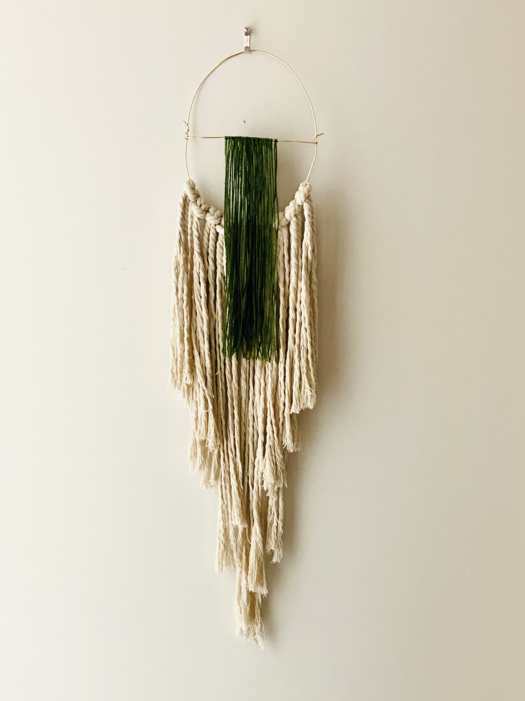
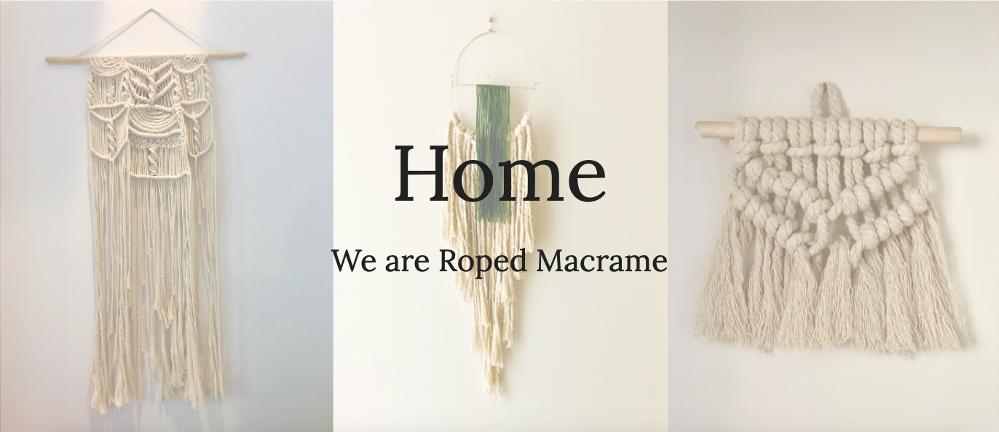
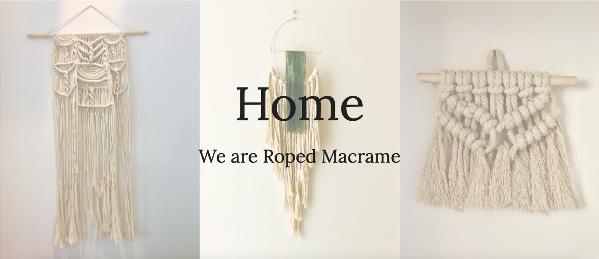

 

Macremé is a popular room decor item that is hard to find in many stores.
We wanted to make something for lockers, rooms, and something boho chic
for your house.
Our goal is to make affordable home decor that can be colorful, yet very
simple. Macremé can add visual interest to any room. We think
that wall hangings are a great way to spruce up a minimalist home or a boho
chic house.
You can also create
the macreméto work just for you. You can choose from a variety of macrame-styled
items such as wall-hangings, coasters, plant hangers, and kits to make them
yourself.